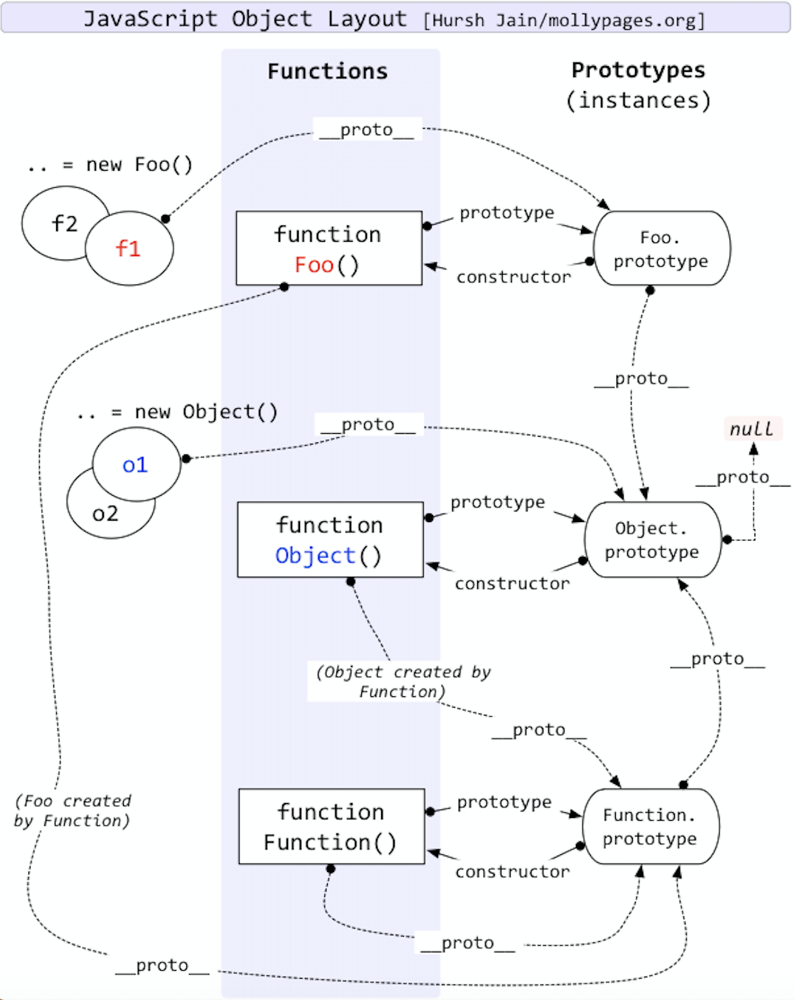

# ES5.1
# 简介
ECMAScript 5.1 (或仅 ES5) 是ECMAScript(基于JavaScript的规范)标准最新修正。 与HTML5规范进程本质类似，ES5通过对现有JavaScript方法添加语句和原生ECMAScript对象做合并实现标准化。ES5还引入了一个语法的严格变种，被称为”严格模式(strict mode)”。
# 浏览器支持
随着Opera 11.60的发布, 所有5大浏览器都支持ES5, 除了一些实现的bugs. 除非另有说明，本文中提到的的一切可以用在以下浏览器版本（或更高）：
Opera 11.60
Internet Explorer 9*
Firefox 4
Safari 5.1**
Chrome 13
IE9不支持严格模式 — IE10 添加Safari 5.1 仍不支持 Function.prototype.bind, 尽管 Function.prototype.bind现在已经被Webkit所支持。兼容低版本
如果要兼容比如ie8，可以下载一个脚本es5-shim，在不存在的环境中手动实现这些方法。
# ES5的严格模式
严格模式给作者提供了选择一个限制性更强语言变种的方式——给作者提供额外的可靠性给用户提供额外的安全性。在JS文件或是函数的顶部添加"use strict"即可启用严格模式。因为"use strict"就是个字符串，因此其会被旧版浏览器安全地忽视。
两种添加方式:
"use strict";
//在顶部直接添加
2
function strict(){
"use strict";
//局部的严格模式
}
2
3
4
在严格模式下运行脚本，不少导致提醒或buggy行为的事情会抛出错误，例如：
- 未声明的变量赋值抛出一个ReferenceError, 而不是创建一个全局变量。
- 不止一次对对象字面量分配相同的属性会抛出SyntaxError.
- 使用with语句抛出SyntaxError.
报错
浏览器在严格模式下，差异还不太一样，也有可能不报错，所以实际情况还要使用后才知道
# JSON
ES5提供一个全局的JSON对象，用来序列化(JSON.stringify)和反序列化(JSON.parse)对象为JSON格式。
对于老的浏览器，可以考虑使用Douglas Crockford的json2.js, 可以让旧的浏览器实现同样的功能（原始支持功能测试后）。
JSON.parse(text [, reviver])
JSON.parse接受文本(JSON格式)并转换成一个ECMAScript值。该可选的reviver参数是有带有key和value两个参数的函数，其作用于结果——让过滤和转换返回值成为可能。
如果我们想确保解析的值是个整数，我们可以使用reviver方法。
var result = JSON.parse('{"a": 1, "b": "2"}', function(key, value){
if (typeof value == 'string'){
return parseInt(value);
} else {
return value;
}
})
>> result.b
2
2
3
4
5
6
7
8
9
10
JSON.stringify(value [, replacer [, space]])
JSON.stringify允许作者接受一个ECMAScript值然后转换成JSON格式的字符串。 在其最简单的形式中，JSON.stringify接受一个值返回一个字符串
如果我们需要改变值字符串化的方式，或是对我们选择的提供过滤，我们可以将其传给replacer函数。例如，我们想过滤出即将被字符串化的对象中值为13的属性：
var nums = {
"first": 7,
"second": 14,
"third": 13
}
var luckyNums = JSON.stringify(nums, function(key, value) {
if (value == 13) {
return undefined;
} else {
return value;
}
}, 2);
>> luckyNums
'{
"first":7,
"second":14
}'
2
3
4
5
6
7
8
9
10
11
12
13
14
15
16
17
18
19
如果replacer方法返回undefined, 则键值对就不会包含在最终的JSON中。我们同样可以传递一个space参数以便获得返回结果的可读性帮助。space参数可以是个数字，表明了作缩进的JSON字符串或字符串每个水平上缩进的空格数。如果参数是个超过10的数值，或是超过10个字符的字符串，将导致取数值10或是截取前10个字符。
# 新增对象
# 附加对象
下面的方法是添加到Object上的构造器：
Object.getPrototypeOf
Object.getOwnPropertyDescriptor
Object.getOwnPropertyNames
Object.create
Object.defineProperty
Object.defineProperties
Object.seal
Object.freeze
Object.preventExtensions
Object.isSealed
Object.isFrozen
Object.isExtensible
Object.keys
这些新增的好处之一是对象的属性有了更多控制，例如哪些是允许被修改的，哪些是可以枚举的，哪些是可以删除的等。这个的实现通过程序访问对象的属性描述符(property descriptors).
# 附加数组
以下方法添加到了Arrayprototype对象上:
- Array.prototype.indexOf
- Array.prototype.lastIndexOf
- Array.prototype.every
- Array.prototype.some
- Array.prototype.forEach
- Array.prototype.map
- Array.prototype.filter
- Array.prototype.reduce
- Array.prototype.reduceRight
# Function.prototype.bind(thisArg [, arg1 [, arg2, …]])
Function.prototype.bind返回一个新的函数对象，该函数对象的this绑定到了thisArg参数上。从本质上讲，这允许你在其他对象链中执行一个函数。
bind不可以用es6写法new
手写一个bind
Function.prototype.bind=function(oThis){
if(type this!=="function"){
throw new TypeError("请使用函数执行")
}
var aArgs=Array.prototype.slice.call(arguments,1),//把调用时候的参数拿到
fToBind=this,
fNop=function(){},
fBound=function(){
return fToBind.apply(this instanceof fBound ?this:oThis,aArgs.concat(Array.prototype.slice.call(argument)))
//解释return fToBind.apply(oThis, aArgs.concat(Array.prototype.slice.call(arguments)));
//考虑bind方法，把oThis变成this。再把参数合并起来
//判断是否有new操作
//instanceof 运算符用于检测构造函数的 prototype 属性是否出现在某个实例对象的原型链上。（实例 instanceof 构造函数）
// 如果当前函数的this指向的是构造函数中的this 则判定为new 操作
// var _this = this instanceof fToBind ? this : oThis;
//是new操作，就不改变this。所有修改为
//return fToBind.apply(_this, aArgs.concat(Array.prototype.slice.call(arguments)));
//这样做主要是为了还原bind的this绑定比new的this优先级高
}
// 维护原型关系，创建了一个空函数来做中间人
if(this.prototype){
fNop.prototype=this.prototype;
}
fBound.prototype=new fNop();
return fBound;
}
2
3
4
5
6
7
8
9
10
11
12
13
14
15
16
17
18
19
20
21
22
23
24
25
26
# this指针的使用
一句话总结就是 谁调用this指向谁,没有就指向window，用new调用，指向实例化对象
this.m=100;
function test(){
alert(this.m);
}
test();//相当于window.test();
>> 100
2
3
4
5
6
如果是有闭包，可能不太一样
this.m=1000;
var obj={
m:100;
test:function(){
alert(this.m);
return function(){
alert(this.m)
}
}
}
(obj.test())();
//这里的指向外面的window
//相当于var t=obj.test();window.t();
>> 100 1000
2
3
4
5
6
7
8
9
10
11
12
13
14
如果是有原型
this.a=1000;
function test(){
this.a=1;
}
test.prototype.geta=function(){
return this.a;
}
var p=new test;
console.log(p.geta())
>> 1 这里就是指向test
2
3
4
5
6
7
8
9
10
# 作用域
js是函数级作用域，在内部的变量，内部能访问，外部不能访问内部的，内部能访问外部的
# 按值传递和按引用传递
js中，string、number、boolean都是按值传递，按值传递不会改变外部的值,但是重写也会改变。object，array是按引用传递，按引用传递会改变外部的值,如果重写两个函数就没有关系了。
var Car=function(color){
this.color=color;
}
Car.prototype.sail=function(){
console.log(...)
}
var Child=function(color){
Car.call(this,color)
}
var __pro=Object.create(Car.prototype);
__pro.constructor=Child;
Child.prototype=__pro;
var m=new Child("red")
2
3
4
5
6
7
8
9
10
11
12
13
这个例子即能表现js面向对象编程，又能表现原型链如何继承
js异步队列
js是单线程，会先进行同步再进行异步，异步包括，事件、setTimeout、ajax。
这就是为什么写一个for循环i变量，里边循环点击事件打印出i，都是最后一个i值。
# 原型链
 ###习题总结 同名变量和函数，函数提升比变量高。如果变量没赋值，就忽略 。 如果函数表达式和函数同名，指的是这表达式。这个函数名是没有意义的，只能在内部访问并且不能重写。 函数自执行，外部不能调用到，只能内部调用。 构造函数的优先级大于原型链 new调用 this指向这个实例 this.length=页面iframe的个数